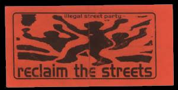

YO der woche
yo am samstag den 11.9. is in berlin zu bewundern was ne party alles sein kann
reclaim the streets ist mal wieder am start treffpunkt 1600 auf der
wiese vorm s bahnhof friedrichsstrasse danach lustige irrfahrt durch
b-stadt um die bullen zu verwirren und irgendwann irgendwo springen
dann hoffentlich 1000 leute ausm u-bahnschacht besetzen ne strasse
und machen ne party .so wies aussieht gibts wahrscheinlich keinen
kopfnickersound geht trotzdem hin laßt euch nicht verarschen
und fangt an zu tanzen malt die straße an oder macht sonst
irgendeinen scheiß den bullen sag ich verpißt euch die
straßen gehören uns gebt mir ein micro und uro battled
euch weg wenn ich bullen in montur sehe krieg ich en lachkrampf ich
wünsch euch 25 grad c mindestens ihr fucker angst vor dem chaos
schweiß stinkt pighead geh dich waschen stinker beim letzten
mal 300 leute eingekesselt und schikaniert mehr dürft ihr nicht
ooh das ist aber schade die dienstnummer aufm arsch von jedem bullen
is mein traum die strasse denen die gerade drauf stehen und nicht der
stadt dem staat oder irgendnem fucker der glaubt mit geld ließe
sich alles kaufen pech gehabt arschloch wenns nach mir ginge
würd ich das pflaster aufreißen und einen hanfwald
sähen dann geh ich die straße runter und wenn ich zuhause
ankomme brauch ich nichts mehr zu rauchen weil ich schon fett bin
beton geht mir sowas von auf den sack stell dich mal auf ein hausdach
und du weißt was ich meine jeder gestaltet die straße wie
es ihm paßt in diesem sinne wir sehen uns -smelly uro wird auf sicherst mittanzen-
nachschlag: |
 |